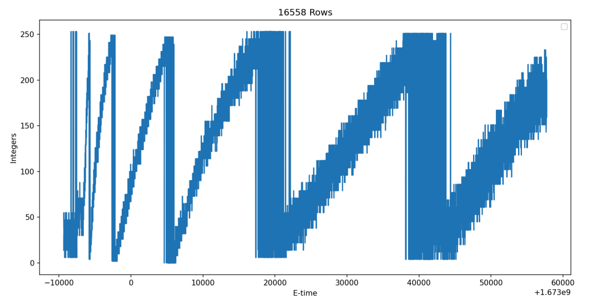

The Challenge: Optomechatronic Instrumentation
To evaluate how the elemental composition of metal powder could be determined during a live print, we needed to capture the optical spectrum from plasma emissions when the powder was excited by a laser.
This required integrating a Compact Spectrometer-Firefly4000 directly into a commercial EOS M 290 closed-system 3D printer. The core engineering challenge was twofold: designing the physical optical routing to capture the plume, and establishing a digital handshake to trigger the sensor only when the machine's moving components were completely stationary.
Phase 1: Optomechanical Routing & Alignment
Before collecting data, the physical sensor hardware needed to be robustly integrated into the harsh environment of the printer chamber.
- Hardware Mounting: Safely mounted the spectrometer beneath the EOS M 290 hood, isolating it outside of the active print chamber.
- Optical Routing: Utilized an SMA905-SMA905 Fibre Optic Patchcord with a 1.0mm core to transmit light emissions from the melt pool to the external sensor.
- Precision Alignment: Integrated a fibre collimator to align the light into a parallel beam, paired with a focusing lens to reduce the divergence angle. This increased the energy density at the focus point, allowing for highly efficient coupling of light into the spectrometer. Precise alignment was critical to accurately capture the expanding laser-produced plasma plume.
Phase 2: System Synchronization via Telemetry
The spectrometer must only collect data when the building platform and recoater blade are strictly stationary to ensure accurate readings. Because the EOS M 290 is a proprietary "black-box" machine, there was no direct software trigger available.
To solve this controls problem, we bypassed the software restrictions by hardware tapping the machine's Industrial PC (IPC). By eavesdropping on the internal Ethernet Powerlink (EPL) V2 network, we could capture the real-time communications between the IPC and the internal servomotors/stepper motors. We monitored a live titanium print job over 30.6 hours, capturing over 337 files and millions of packets for analysis.
Phase 3: Hardware Validation & Data Pipelines
With the raw network traffic captured, I engineered a Python data pipeline to parse the hex strings, downsample the massive dataset to optimize processing (reducing to 8,279 alternate rows), and graph the electrical signals against machine epoch time.

Data Visualization: Python scripts utilizing Matplotlib to map 12 extracted packet nodes, revealing distinct cyclical saw-tooth patterns in the hardware network traffic.
To validate our findings, I cross-referenced the distinct cyclical patterns in the packet graphs against known InfluxDB telemetry data (tracking recoater speed, dispenser position, and filter pressure).
This analysis successfully proved that "Node ID 2" perfectly correlated with the physical position and speed of the recoater blade. Deciphering this signal established the crucial baseline needed to automatically trigger the Firefly4000 spectrometer exactly when the physical hardware was in the correct, stationary state.